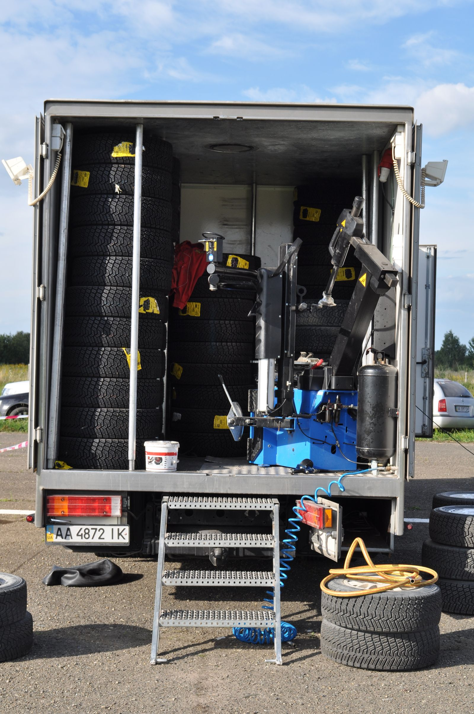

Mobile mechanic · based near 2500 Dartmouth St, College Station
Your car won't start.
So we come to you.
Tony drives to your home, office, or the side of the road with the tools and parts to diagnose and fix most issues on the spot — no tow, no waiting room.

How it works
One call, and help is on the way
No shop to drive to — the shop drives to you. Real reviews describe Tony responding quickly and getting to customers even during a "hectic graduation weekend."
Call or text
Tell Tony what's going on and where you are — home, work, or stuck on the roadside.
Tony drives to you
He heads out with tools and, per real reviews, will pick up needed parts on the way (e.g. an AC part from AutoZone) so the job gets done in one trip.
Diagnosed & fixed on site
Reviewers describe him troubleshooting down to the actual cause — a bad fuel pump, a dead battery, a failing alternator — right where the car sits.
Where we go
Serving College Station & Bryan
Based near Dartmouth St in College Station and dispatched to customers around the Brazos Valley. Call to confirm Tony can reach your specific address.
Areas mentioned in real reviews
What Tony handles
Mobile diagnostics & repair
Built from real review topics on Bats Mobile Mechanic's Google Business Profile — not a confirmed price list. Call and describe your issue.
Battery Replacement
On-the-spot battery swaps and jump starts.
Alternator Check
Diagnosing charging-system issues at your location.
Fuel Pump Diagnosis
Troubleshooting no-start issues down to the real cause.
A/C Repair
Reviewers describe a full AC repair completed in one mobile visit.
Tire Change
Flat tire swaps wherever you're parked.
General Diagnostics
Ask about your specific issue — Tony handles a wide range of mobile repairs.
Service list above is built from real review topics ("battery replacement," "mobile mechanic," "tire change," "alternator check," "jump start") — confirm exactly what's needed by calling (979) 739-3122.
A story worth telling
He'll go above and beyond — even for a kitten
The kitten in the engine
One real review describes a kitten that got stuck inside a customer's engine bay. Tony rescued it safely — without hurting the animal — and still took care of the car. It's the kind of detail that shows up in the reviews more than once: patient, careful, and willing to go past the job description.
Summarized from a real review on Bats Mobile Mechanic's Google Business Profile, read for internal research 2026-09-21 — not republished as a direct quote.About the business
One mechanic, one truck, straight to your driveway
Bats Mobile Mechanic is run by owner Tony, formerly known as Batmobile Mobile Mechanic, out of the College Station / Bryan area. Real reviews describe him as quick to respond, knowledgeable, and thorough — troubleshooting problems down to their actual cause rather than guessing, and picking up parts along the way so a single visit gets the job finished.
Source: Bats Mobile Mechanic's public Google Business Profile — lead verified 2026-09-05, review text read for internal research 2026-09-21. Review text itself is not republished on this page as quotes.
Customer reviews
Real reviews from real customers
Google reviews will appear here once connected. We'll display exactly what customers have said — nothing invented, nothing edited.
Google reviews will appear here once connected.
See us on GoogleAs shown on Bats Mobile Mechanic's public Google Business Profile — verified 2026-09-21.
Reach Tony
Call, and he'll head your way
Contact
Based near 2500 Dartmouth St, College Station, TX
No independent website is listed for Bats Mobile Mechanic, per its Google Business Profile (verified 2026-09-21).
Hours
Call or message for hours & availability.
As a mobile operation, availability can vary by day and location — calling ahead is the fastest way to confirm Tony can come to you.
Broken down? Don't wait for a tow.
Call and tell Tony where you are. Mobile diagnostics and repair, done at your location.